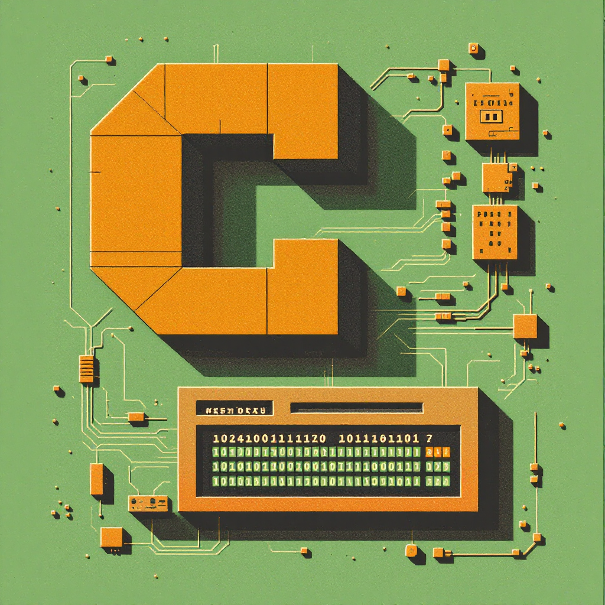

Author’s Note
Dear Readers,
As I continue learning C programming, I want to share that I am writing this series while actively developing my skills. This means that while I strive to provide accurate and helpful information, there may be occasional mistakes or oversights in the content.
If you spot any errors or have suggestions for improvement, please don’t hesitate to leave a comment. Your feedback is invaluable—not only to me as I learn, but also to fellow readers who benefit from a collaborative learning environment. Together, we can create a more informative and enriching experience for everyone.
Thank you for your understanding and support on this exciting journey!
Introduction
If you’re new to C programming, understanding arrays and pointers might seem intimidating at first. However, these concepts are fundamental to mastering C and can make your code more efficient once you understand them. This guide breaks down these concepts in simple language with plenty of examples to help you grasp how arrays and pointers work in C and how they relate to each other.
Think of arrays as containers that hold multiple items of the same type, while pointers are variables that store memory addresses. The fascinating part is how closely these two concepts are connected in C. By the end of this article, you’ll have a solid understanding of both concepts and how they can work together.
What Are Arrays in C?
An array in C is a collection of elements of the same data type, stored in contiguous memory locations. It’s like having multiple variables of the same type, accessed using a single name.
Creating and Using Arrays
To create an array, you specify its type and size:
#include <stdio.h>
int main() {
// Declaring an array of 5 integers
int numbers[5];
// Initializing array elements
numbers[0] = 10;
numbers[1] = 20;
numbers[2] = 30;
numbers[3] = 40;
numbers[4] = 50;
// Accessing array elements
printf("First element: %d\n", numbers[0]);
printf("Third element: %d\n", numbers[2]);
return 0;
}Output:
First element: 10
Third element: 30You can also initialize an array at declaration:
int numbers[5] = {10, 20, 30, 40, 50};Multi-dimensional Arrays
C supports multi-dimensional arrays. Here’s how to create and use a 2D array:
#include <stdio.h>
int main() {
// 2D array: 3 rows, 4 columns
int grid[3][4] = {
{1, 2, 3, 4},
{5, 6, 7, 8},
{9, 10, 11, 12}
};
// Accessing elements
printf("Element at row 1, column 2: %d\n", grid[1][2]);
return 0;
}Output:
Element at row 1, column 2: 7What Are Pointers in C?
A pointer is a variable that stores the memory address of another variable. Pointers are powerful because they allow direct manipulation of memory.
Declaring and Using Pointers
Here’s how to declare and use a basic pointer:
#include <stdio.h>
int main() {
int num = 10; // Regular integer variable
int *ptr; // Pointer to integer
ptr = # // Assign address of num to ptr
printf("Value of num: %d\n", num);
printf("Address of num: %p\n", &num);
printf("Value stored in ptr: %p\n", ptr);
printf("Value that ptr points to: %d\n", *ptr);
// Change the value using the pointer
*ptr = 20;
printf("New value of num: %d\n", num);
return 0;
}Output:
Value of num: 10
Address of num: 0x7fff5fbff8ac (this address will vary)
Value stored in ptr: 0x7fff5fbff8ac (same as above)
Value that ptr points to: 10
New value of num: 20Key Pointer Operations
- & (Address-of operator): Gets the memory address of a variable
- * (Dereference operator): Accesses the value at the address stored in a pointer
The Relationship Between Arrays and Pointers
Here’s where things get interesting: In C, an array name is essentially a pointer to the first element of the array. This is one of the most important concepts to understand.
#include <stdio.h>
int main() {
int numbers[5] = {10, 20, 30, 40, 50};
printf("Array name points to first element: %p\n", numbers);
printf("Address of first element: %p\n", &numbers[0]);
// These two print the same value
printf("First element using array notation: %d\n", numbers[0]);
printf("First element using pointer notation: %d\n", *numbers);
return 0;
}Output:
Array name points to first element: 0x7fff5fbff890 (address will vary)
Address of first element: 0x7fff5fbff890 (same as above)
First element using array notation: 10
First element using pointer notation: 10Accessing Array Elements Using Pointers
Because an array name works like a pointer, you can access array elements using pointer arithmetic:
#include <stdio.h>
int main() {
int numbers[5] = {10, 20, 30, 40, 50};
// Using array notation
printf("Array notation:\n");
for(int i = 0; i < 5; i++) {
printf("numbers[%d] = %d\n", i, numbers[i]);
}
// Using pointer notation
printf("\nPointer notation:\n");
for(int i = 0; i < 5; i++) {
printf("*(numbers + %d) = %d\n", i, *(numbers + i));
}
return 0;
}Output:
Array notation:
numbers[0] = 10
numbers[1] = 20
numbers[2] = 30
numbers[3] = 40
numbers[4] = 50
Pointer notation:
*(numbers + 0) = 10
*(numbers + 1) = 20
*(numbers + 2) = 30
*(numbers + 3) = 40
*(numbers + 4) = 50Key Difference Between Array Names and Pointers
While array names act like pointers, there’s a crucial difference: an array name is a constant pointer. You cannot change where it points:
int numbers[5] = {10, 20, 30, 40, 50};
int *ptr = numbers; // This is fine
numbers = ptr; // ERROR! Cannot assign to array name
ptr = numbers; // This is finePointers and Array Arithmetic
When you perform arithmetic on pointers, C automatically scales the operation based on the data type’s size:
#include <stdio.h>
int main() {
int numbers[5] = {10, 20, 30, 40, 50};
int *ptr = numbers; // Points to first element
printf("ptr points to: %d\n", *ptr);
ptr++; // Move to next integer (adds 4 bytes, not just 1)
printf("After ptr++, ptr points to: %d\n", *ptr);
ptr += 2; // Move forward 2 integers
printf("After ptr += 2, ptr points to: %d\n", *ptr);
return 0;
}Output:
ptr points to: 10
After ptr++, ptr points to: 20
After ptr += 2, ptr points to: 40Your Turn!
Let’s practice by filling in the missing parts of this code that calculates the sum of array elements using pointer notation:
#include <stdio.h>
int main() {
int numbers[5] = {10, 20, 30, 40, 50};
int sum = 0;
int *ptr = /* What goes here? */;
for(int i = 0; i < 5; i++) {
sum += /* How do we access the element? */;
/* How do we move to the next element? */;
}
printf("Sum of array elements: %d\n", sum);
return 0;
}See Solution
#include <stdio.h>
int main() {
int numbers[5] = {10, 20, 30, 40, 50};
int sum = 0;
int *ptr = numbers; // Point to the first element
for(int i = 0; i < 5; i++) {
sum += *ptr; // Add the value pointed to by ptr
ptr++; // Move to the next element
}
printf("Sum of array elements: %d\n", sum);
return 0;
}Output:
Sum of array elements: 150Character Arrays and Pointers
Character arrays and pointers have a special relationship in C, especially when dealing with strings.
Character Arrays (Strings)
In C, strings are represented as arrays of characters terminated with a null character '\0':
#include <stdio.h>
int main() {
// String declaration using character array
char name[20] = "John";
printf("Name: %s\n", name);
printf("First character: %c\n", name[0]);
return 0;
}Output:
Name: John
First character: JCharacter Pointers
You can also represent strings using character pointers:
#include <stdio.h>
int main() {
// String declaration using character pointer
char *name = "John";
printf("Name: %s\n", name);
printf("First character: %c\n", *name);
return 0;
}Output:
Name: John
First character: JKey Differences Between Character Arrays and Character Pointers
This is an important distinction to understand:
#include <stdio.h>
#include <string.h>
int main() {
// Character array (can be modified)
char name1[20] = "John";
// Character pointer (points to string literal, which cannot be modified)
char *name2 = "John";
// This is fine
strcpy(name1, "Alex");
printf("name1 after modification: %s\n", name1);
// This is NOT fine and may cause a segmentation fault
// strcpy(name2, "Alex"); // Trying to modify a string literal
// This is fine (changing what name2 points to)
name2 = "Alex";
printf("name2 after reassignment: %s\n", name2);
return 0;
}Output:
name1 after modification: Alex
name2 after reassignment: AlexArrays of Pointers
Arrays can contain pointers, which is especially useful for creating an array of strings:
#include <stdio.h>
int main() {
// Array of character pointers (array of strings)
char *fruits[] = {
"Apple",
"Banana",
"Cherry",
"Date",
"Elderberry"
};
// Print all fruits
for(int i = 0; i < 5; i++) {
printf("Fruit %d: %s\n", i+1, fruits[i]);
}
// Accessing individual characters
printf("\nFirst letter of second fruit: %c\n", fruits[1][0]);
return 0;
}Output:
Fruit 1: Apple
Fruit 2: Banana
Fruit 3: Cherry
Fruit 4: Date
Fruit 5: Elderberry
First letter of second fruit: BPointers to Arrays
You can also have pointers that point to entire arrays:
#include <stdio.h>
int main() {
int numbers[5] = {10, 20, 30, 40, 50};
// Pointer to an array of 5 integers
int (*ptr)[5] = &numbers;
// Accessing array elements using the pointer to array
printf("First element: %d\n", (*ptr)[0]);
printf("Third element: %d\n", (*ptr)[2]);
return 0;
}Output:
First element: 10
Third element: 30Common Patterns and Use Cases
1. Passing Arrays to Functions
When you pass an array to a function, you’re actually passing a pointer:
#include <stdio.h>
// Function that takes an array (or pointer to its first element)
void printArray(int arr[], int size) {
printf("Array elements: ");
for(int i = 0; i < size; i++) {
printf("%d ", arr[i]);
}
printf("\n");
}
int main() {
int numbers[5] = {10, 20, 30, 40, 50};
// Pass the array to function
printArray(numbers, 5);
return 0;
}Output:
Array elements: 10 20 30 40 50Alternative function signature with explicit pointer:
void printArray(int *arr, int size) {
// Function body remains the same
}2. Dynamic Memory Allocation for Arrays
Pointers allow you to create arrays whose size is determined at runtime:
#include <stdio.h>
#include <stdlib.h>
int main() {
int size;
printf("Enter the size of the array: ");
scanf("%d", &size);
// Dynamically allocate memory for the array
int *dynamicArray = (int*)malloc(size * sizeof(int));
if(dynamicArray == NULL) {
printf("Memory allocation failed\n");
return 1;
}
// Initialize the array
for(int i = 0; i < size; i++) {
dynamicArray[i] = i * 10;
}
// Print the array
printf("Dynamic array elements: ");
for(int i = 0; i < size; i++) {
printf("%d ", dynamicArray[i]);
}
printf("\n");
// Free the allocated memory
free(dynamicArray);
return 0;
}Sample Output (for size=4):
Enter the size of the array: 4
Dynamic array elements: 0 10 20 303. String Manipulation
#include <stdio.h>
#include <string.h>
int main() {
char str[50] = "Hello, ";
char *world = "World!";
// Concatenate strings
strcat(str, world);
printf("Concatenated string: %s\n", str);
return 0;
}Output:
Concatenated string: Hello, World!Your Turn!
Let’s write a program that reverses an array using pointers:
#include <stdio.h>
void reverseArray(/* What parameters? */) {
/* Your code here */
}
int main() {
int arr[5] = {10, 20, 30, 40, 50};
printf("Original array: ");
for(int i = 0; i < 5; i++) {
printf("%d ", arr[i]);
}
reverseArray(/* Arguments? */);
printf("\nReversed array: ");
for(int i = 0; i < 5; i++) {
printf("%d ", arr[i]);
}
return 0;
}See Solution
#include <stdio.h>
void reverseArray(int *arr, int size) {
int *start = arr; // Pointer to the start of array
int *end = arr + size - 1; // Pointer to the end of array
int temp;
while(start < end) {
// Swap elements
temp = *start;
*start = *end;
*end = temp;
// Move pointers toward the center
start++;
end--;
}
}
int main() {
int arr[5] = {10, 20, 30, 40, 50};
printf("Original array: ");
for(int i = 0; i < 5; i++) {
printf("%d ", arr[i]);
}
reverseArray(arr, 5);
printf("\nReversed array: ");
for(int i = 0; i < 5; i++) {
printf("%d ", arr[i]);
}
return 0;
}Output:
Original array: 10 20 30 40 50
Reversed array: 50 40 30 20 10Common Mistakes and Pitfalls
1. Accessing Out-of-Bounds Memory
int arr[5] = {10, 20, 30, 40, 50};
printf("%d\n", arr[7]); // Accessing beyond the array boundsThis can lead to unpredictable behavior, program crashes, or security vulnerabilities.
2. Dangling Pointers
int *ptr = (int*)malloc(sizeof(int));
*ptr = 10;
free(ptr);
printf("%d\n", *ptr); // Accessing freed memoryAlways set pointers to NULL after freeing them.
3. Uninitialized Pointers
int *ptr;
*ptr = 10; // ptr doesn't point to valid memory yetAlways initialize pointers before using them.
4. Memory Leaks
void functionWithLeak() {
int *ptr = (int*)malloc(sizeof(int));
// Missing free(ptr) before function returns
}Always free dynamically allocated memory when you’re done with it.
5. Modifying String Literals
char *str = "Hello";
str[0] = 'J'; // Trying to modify a string literal, which is undefined behaviorUse character arrays if you need to modify strings.
Key Takeaways
Arrays and pointers are closely related: An array name is essentially a constant pointer to its first element.
Array notation vs pointer notation:
array[i]is equivalent to*(array + i)&array[i]is equivalent to(array + i)
Pointer arithmetic is scaled: When you add 1 to a pointer, it actually advances by the size of the data type it points to.
Character arrays vs character pointers:
- Character arrays can be modified after initialization
- Character pointers to string literals should not be modified
Arrays are always passed by reference: When you pass an array to a function, you’re actually passing a pointer.
Dynamic memory allocation: Pointers are essential for dynamic memory allocation using
malloc()andfree().
FAQs
1. What’s the difference between int arr[] and int *arr in function parameters?
They are functionally equivalent in function parameters, but the array notation better communicates intent.
2. Can I change where an array points?
No, array names are constant pointers. You cannot reassign them.
3. What happens if I access an array out of bounds?
This leads to undefined behavior. Your program might crash, produce incorrect results, or appear to work normally but have hidden bugs.
4. How do I pass a 2D array to a function?
You need to specify at least the second dimension: void func(int arr[][COLS], int rows).
5. Can I compare two arrays using the == operator?
No, you need to compare each element individually or use functions like memcmp() for byte-by-byte comparison.
Conclusion
Arrays and pointers are foundational concepts in C programming that work closely together. Understanding the relationship between arrays and pointers is crucial for writing efficient C code and avoiding common pitfalls.
Arrays provide a convenient way to store collections of data, while pointers give you the flexibility to manipulate memory directly. By mastering both concepts and how they interact, you’ll significantly improve your C programming skills.
Remember, practice is key! Try writing small programs that use arrays and pointers in different ways to reinforce your understanding.
References
- C Pointers and Arrays - Programiz
- Array of Pointers in C - GeeksforGeeks
- Understanding and Using C Pointers: Chapter 4. Pointers and Arrays - O’Reilly
Happy Coding! 🚀

You can connect with me at any one of the below:
Telegram Channel here: https://t.me/steveondata
LinkedIn Network here: https://www.linkedin.com/in/spsanderson/
Mastadon Social here: https://mstdn.social/@stevensanderson
RStats Network here: https://rstats.me/@spsanderson
GitHub Network here: https://github.com/spsanderson
Bluesky Network here: https://bsky.app/profile/spsanderson.com
My Book: Extending Excel with Python and R here: https://packt.link/oTyZJ
You.com Referral Link: https://you.com/join/EHSLDTL6